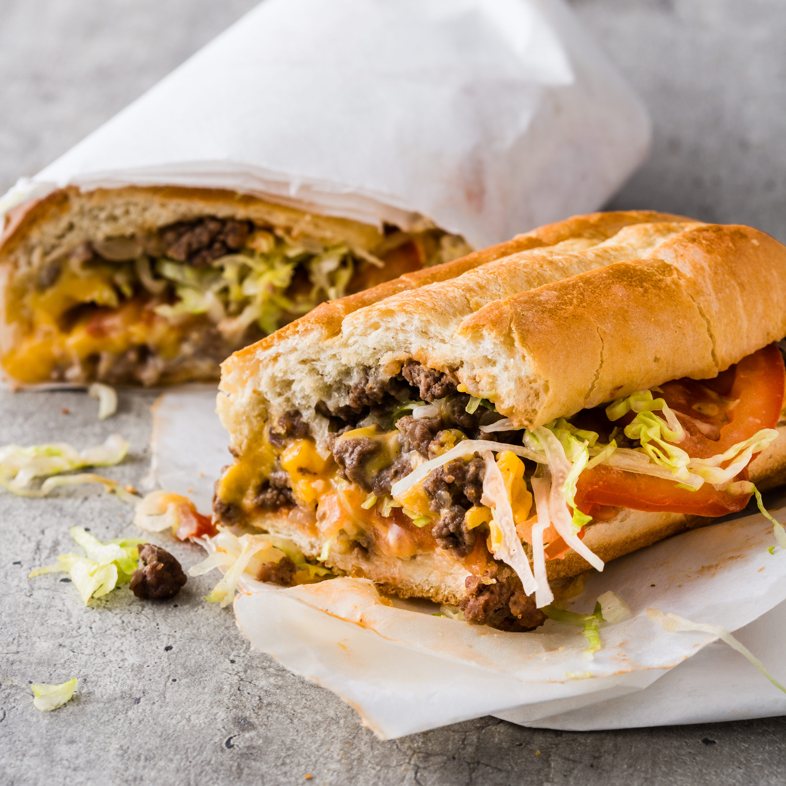

Chopped Cheese

Descripton
Recipie to make infamous and delicious NYC street food at home
Ingredients
- 70/30 mince beef
- Brioche burger buns
- Smokec cheese
- Cheddar cheese
- American cheese
- Onion
- Tomato
- Iceberg lettuce
- Mayo
- Calabrian chillis in olive oil
- Garlic powder
- Onion powder
- Smoked paprika
Steps
Sauce
- Add mayo to bowl
- Add around 1/5 of volume of mayo in chilli
- Mix and add a few squeezes of a lime
Salad
- Chop off head of lettuce
- Slice lettuce as thinly as possible
- Slice tomato as thinly as possible
- Salt and pepper the salad
Meat + Cheese
- Slice onion
- Heat cast iron skillet on medium-high
- Add meat to pan in a column and allow to develop a crust
- Once crust has formed, add salt, pepper, smoked paprika, onion powder and garlic powder on top of meat
- Add 3 slices of each cheese on top
- Add onion on top
- Chop with spatula until consistent
- Make sure other side develops crust, onions are caramlised and cheese has melted
Serving
- Lightly toast buns
- Put sauce on each bun
- Next add meat + cheese
- Place 3 tomatoes for each sandiwch and generous amount of lettuce on top
- Add more of chilli mayo on top of lettuce and close with other bun
- Wrap in tin foil so juice mix more
- Enjoy!